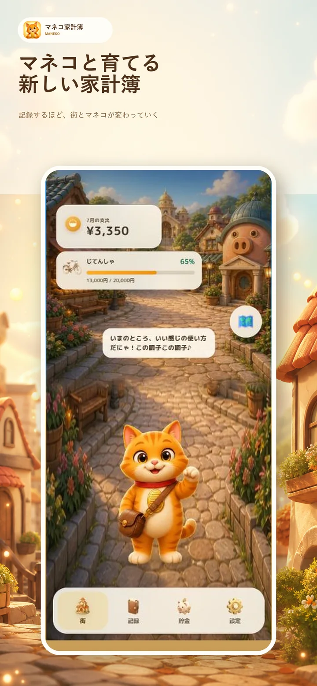
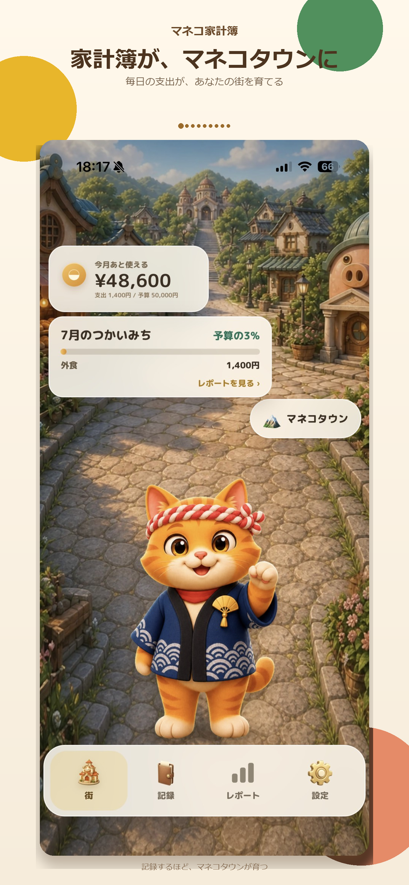
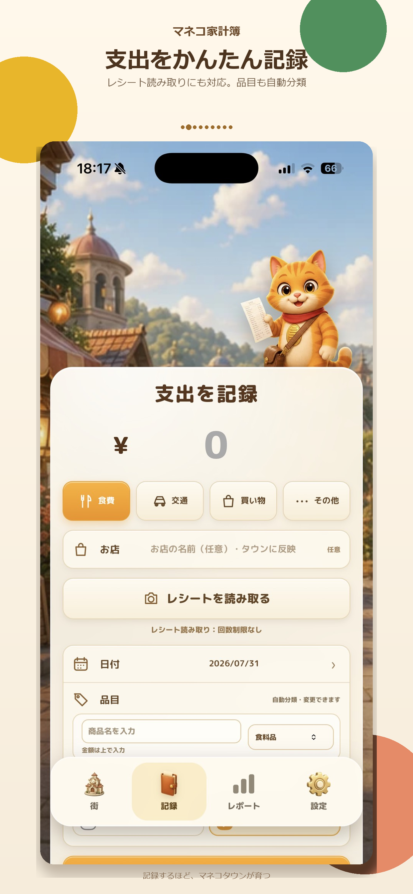
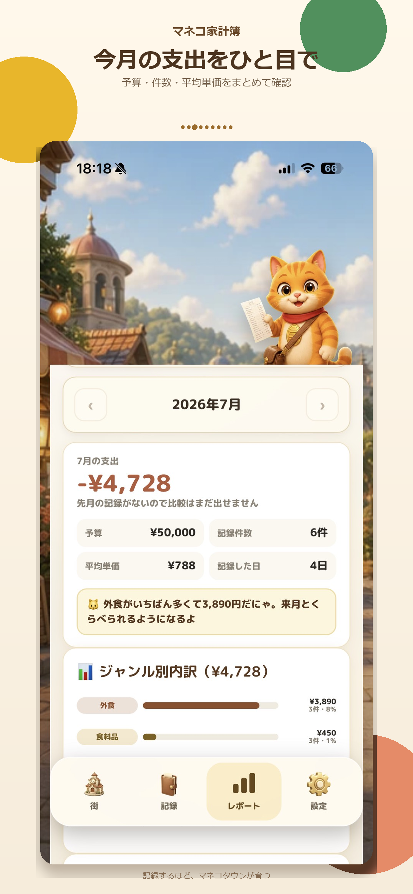

撮るだけで記録
レシートから品目とジャンルを読み取り、面倒な入力を減らします。
つかったお金が、かわいい街になる家計簿。
レシートを撮るだけで支出を記録。つかったお金がお店になり、マネコと街が少しずつ育ちます。数字を責めるのではなく、続けたくなる体験に変えました。
App Storeで入手 ↗
Features
レシートから品目とジャンルを読み取り、面倒な入力を減らします。
記録したお店やジャンルが街に現れ、毎日の支出が景色として残ります。
マネコが今月の使い方を解説。使いすぎた月も責めません。
How to use
買い物のあとに撮影して、読み取った内容を確認するだけ。
記録が反映されたマネコタウンと、マネコの変化を楽しみます。
予算、ジャンル別内訳、マネコのコメントから次の一歩を決めます。
Latest screens



家計簿を、開きたくなる場所へ。
App Storeで入手 ↗